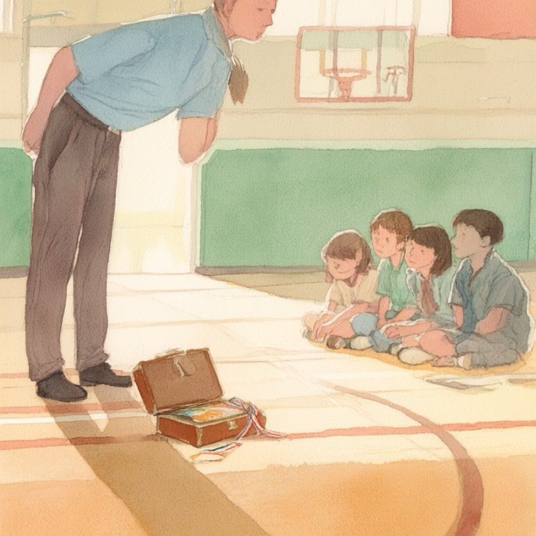

番外05：心境重量

阿邦當體育老師的第三年，體育館漏雨的保麗龍天花板換掉了，換不掉的是他自己的習慣：每天早上六點半，學生還沒進校門，他先走到槓鈴架前，把一條二十公斤的空槓放上肩，蹲十下。
第一下總是晃的。他從來不覺得丟臉，十年前有人告訴過他，第一下會晃，是因為身體還在跟昨天說再見。
十下蹲完，他從槓鈴架上取下夾著的紀錄本，在今天的日期旁邊寫一個數字：零到一百，叫做「心境重量」。這不是他發明的。是他國二那年，理化老師兼重訓社指導的Cy老師定的規矩：槓上要加幾公斤，先看今天的心境有多重。心境九十的日子，硬舉就退到六成。「槓鈴不會替你把心事扛走，」那時候Cy老師這樣說，「但牠是最大的真話者。你要嘛老實報小一點，要嘛趴在槓下面學會後悔。」
十一月的某個升旗過後，阿邦在體育館的跳高墊後面，發現一個縮成一團的國一生。制服第二顆扣子被扯掉了，鞋帶被人打成死結，書包丟在垃圾桶旁邊，像也被順手扔掉了。阿邦認得那個姿勢，不是認得這個孩子，是認得那種連呼吸都放小、希望全世界不要發現自己的蹲法。十年前，他蹲在舊體育館的墊子後面，就是這樣蹲的。
他沒有問是誰。他只是拍了拍手上的粉筆灰：「欸，來得正好。墊子要收，你收那一邊，我收這一邊。」
收完墊子，小孩轉身要走，阿邦把紀錄本遞過去。
「會寫字喔？幫我寫今天的心境重量。」
小孩愣了一下，接過筆，寫了一個「0」。
「你的手在抖，」阿邦說，「0是騙人的。這本冊子什麼都可以騙，就是這個數字不行。因為待會兒槓會幫你對答案。」
小孩瞪他一眼，把筆尖重重戳回去，寫了個92，力道大得幾乎要劃破紙。
「好，92。」阿邦點點頭，把空槓從架上取下來，「不用加片，就這樣，蹲十下。蹲完我們再來看那個92要怎麼辦。」
十下之後，小孩扶著膝蓋喘，臉上那種繃了一早上的東西鬆開了一點。「欸……好像也還好耶。」
「對啊。」阿邦說，「因為你剛剛沒有騙人。」
後來小孩跟同學講，那天那條空槓，比他家的蓮蓬頭還輕，蹲到第八下的時候，肩膀上明明有一瞬間，像被人用手掌從下面輕輕托了一把，托完就沒了，快得像自己眼睛花掉。阿邦聽到了，只是笑笑，沒有解釋。他自己十年前也遇過那一下。有些東西不需要名字，只需要你蹲得夠低、夠老實，牠就會順手幫你一下。
下課前，阿邦去校門口的雜貨店，照老規矩買了一瓶玻璃瓶可樂，冰的，瓶身冒著霧氣。老闆娘抬頭看他，又看看門口那個眼睛還腫著的國一生，什麼都沒多問，從冰櫃裡再摸出一瓶塞給阿邦：「這瓶算我的。我開店三十年，這種可樂我這裡永遠有庫存。」
小孩捧著可樂，捧得像捧什麼獎盃，一路捧到校門口才捨得開。
從那天起，那個孩子每天早自習會溜進體育館，先寫心境重量，再陪阿邦蹲十下。有幾天數字很高，八十七、八十九，他就只蹲空槓，連一個小片都不加；有幾天數字掉到三十幾，兩人就慢慢往上加重量。一個多月後，他的死結換成了自己打的漂亮蝴蝶結，垃圾桶旁邊再也沒有出現過他家的書包。
隔年他升上國二，個子抽高了，體育課的時候會站在隊伍最旁邊，幫國一的新生喊節奏。有天下課他留下來收墊子，收到一半忽然問：「老師，你怎麼那麼會教啦？你以前……是不是也當過那種被欺負的？」
阿邦把紀錄本闔上，放回槓鈴架上。
「有一個老師蹲給我看過。」他說。
那天晚上，阿邦傳訊息給遠在山城的中學老師，附上一張手機拍的照片：這三個多月的曲線，九十幾一路降下來，中間有一個禮拜卡在六十，最後寫到二十出頭。沒多久手機震了一下，回他四個字：「槓鈴沒騙人。」過了一分鐘又補一句：「冬至上來驗收硬舉。還有，可樂錢自己出，你的學生，你自己請。」
阿邦笑出來，把訊息存好，走到體育館關燈前，翻開紀錄本看了一眼。最後一頁是那孩子的字，歪歪的，筆畫卻很用力：「心境重量：12。今天槓很輕，輕到我差點忘了我曾經很重。」
窗外雨城的雨還在下。體育館裡，那條空槓安安靜靜地躺在架上，像在等明天早上六點半，等第一下會晃的那一次深蹲，等下一個數字，被老老實實地寫下來。